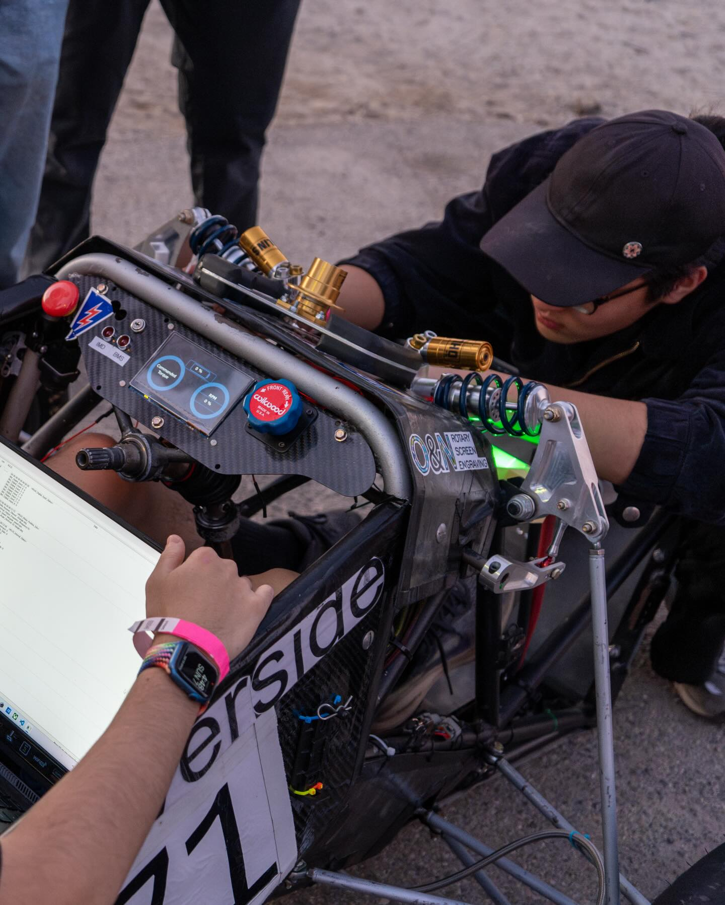

ENG

About Me
Hello, I'm Justin Im, a Robotics Engineering student at UC Riverside passionate about embedded systems and firmware development. I specialize in working with STM32 microcontrollers, real-time operating systems, and CAN bus communication. As a technical lead at Highlander Racing, I manage firmware development for UCR's Formula SAE electric vehicles. In my spare time, I draw inspiration from science fiction and apply those ideas to projects aimed to improve living standards, lifestyles, and environmental sustainability.
Project Highlights
Education
University of California, Riverside
B.S. in Robotics Engineering Expected June 2027Experience
UCR Highlander Racing
CS Development Team Lead Dec 2023 - Present- Project managing a team of 10-20 people to develop firmware for FSAE electric vehicles
- Designing and implementing Vehicle Control Unit (VCU) using STM32F7 with FreeRTOS for real-time motor control and safety systems
- Creating driver dashboard with STM32F7 Discovery Board utilizing FreeRTOS for concurrent CAN bus communication and display updates
- Leading development of custom Battery Management System using BQ79616 ICs and Teensy 4.1 for cell monitoring and CAN bus integration
- Overseeing Thermistor Sense Module design using STM32 Bluepill and ESP-32 for thermal monitoring
- Presenting software design choices to panels of alumni and industry professionals in design reviews
ACM@UCR
Software Engineer & Project Director Jun 2024 - Present- Developed autonomous drone project for navigating obstacle courses using Python, Raspberry Pi, and OpenCV
- Implemented computer vision pipeline with HAAR Cascade model for cone detection
- Built touch screen interface for Wizard-Chess game using C++ and Qt Creator
- Contributed to Women in the Law (WITL) website using Node.js, React, Next.js, and Tailwind CSS
UCR PRT Lab
Undergraduate Student Researcher Mar 2025 - Present- Investigating face detection and emotion recognition applied to infant research
- Evaluating facial detection models (MTCNN, dlib, RetinaFace) with Emotion-FER+ for accuracy and performance
- Implementing computer vision models using Python and Docker for analysis
Projects
Pomo
Mar 2026 - CurrentA productivity application designed to enhance focus and time management for users.
View Project27E Custom Battery Management System
Mar 2026 - CurrentLeading R&D of a custom BMS for Highlander Racing's 27E competition car using 10 BQ79616 management units communicating to a Teensy 4.1 with CAN Bus output for cell voltage monitoring.
View ProjectRaspberry Pi WiFi Extender
ACM ProjectA WiFi range extension project built on Raspberry Pi, extending network coverage and connectivity.
View Project26E Thermistor Sense Module
Oct 2025 - CurrentSTM32 Bluepill and ESP-32 based thermal monitoring module for Highlander Racing's battery pack. Collects multiplexed thermistor data, converts ADC values to temperature using calibration equations, and packages data into CAN messages.
View Project26E Vehicle Control Unit
Jun 2025 - CurrentSTM32F7 based Vehicle Control Unit implementing FSAE-compliant motor control with gradient equations for accelerator/brake pedal positions, torque curve calculations, and 500 kilobaud CAN bus communication to motor inverters.
View Project24E CAN Test Bench
Apr 2025 (1 month)Arduino UNO with CAN Shield device for broadcasting joystick ADC input over CAN bus. Built to validate Dashboard CAN bus sniffing capabilities and test firmware during development.
View ProjectAutonomous Drone Navigation
Dec 2024 - CurrentPython-based autonomous drone navigating obstacle courses using Raspberry Pi, OpenCV for cone detection, and trained HAAR Cascade models for real-time computer vision processing.
View Project26E Driver Dashboard
Sept 2024 - CurrentSTM32F7 Discovery Board dashboard leveraging FreeRTOS for concurrent CAN bus sniffing and real-time display updates. Validated with Hardware-in-Loop testing using Arduino CAN Shield test bench.
View ProjectWomen in the Law (WITL) Website
Jun 2024 - Aug 2024Full-stack web development for WITL website fostering a community of students interested in pursuing a career in law. Built with React, Next.js, Tailwind CSS with modern development workflows using Prettier and Eslint.
View ProjectSkills
Languages
- C
- C++
- Python
- Verilog
Embedded Systems
- STM32 (HAL, FreeRTOS)
- Arduino
- CAN Bus
- UART
- ADC/GPIO
- Finite State Machines (FSM)
Platforms & Tools
- STM32CubeIDE
- PlatformIO
- Git
- Linux
- Raspberry Pi
- OpenCV
- ROS2
- Solidworks